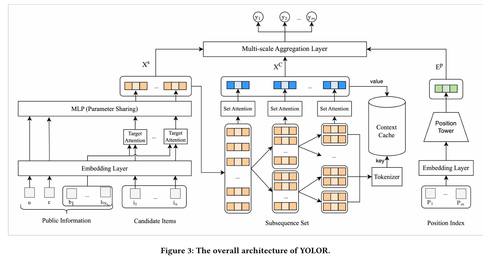
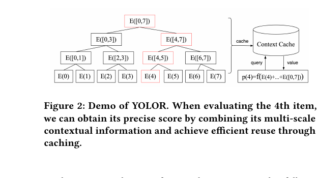
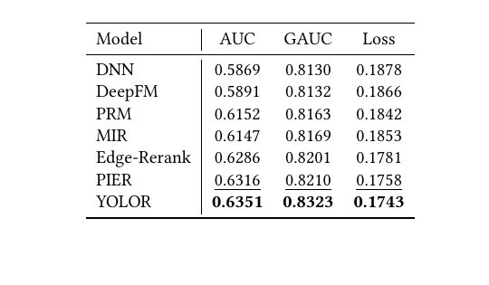
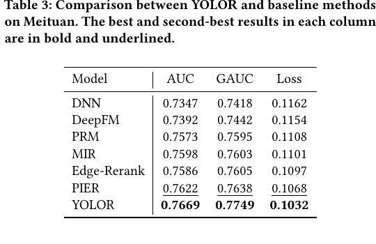
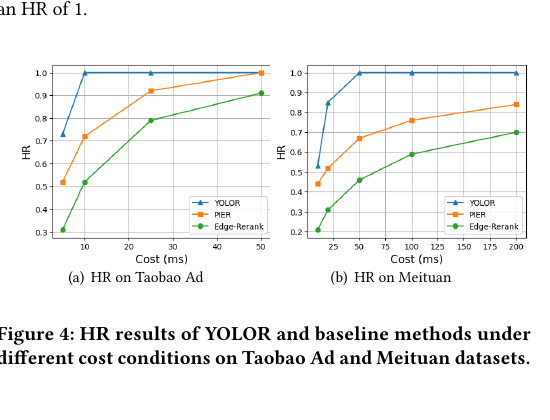
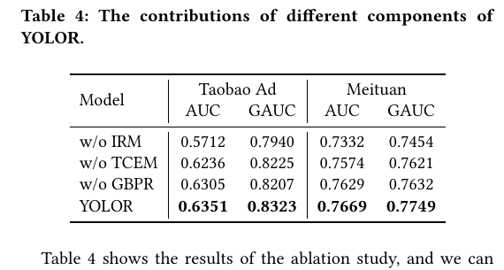
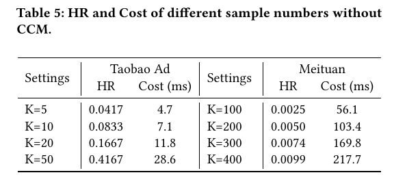
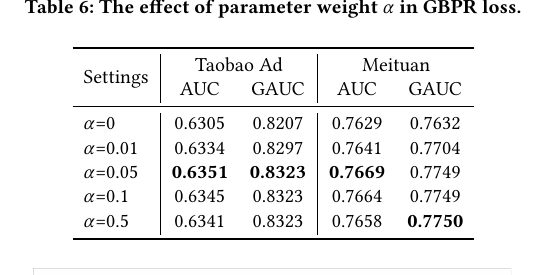
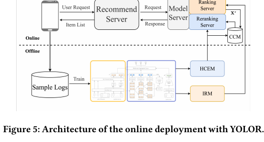
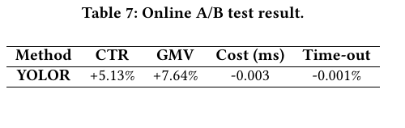

YOLOR
1. 基本信息
- 标题：You Only Evaluate Once: A Tree-based Rerank Method at Meituan
- 作者：Shuli Wang, Yinqiu Huang, Changhao Li, Yuan Zhou, Yonggang Liu, Yongqiang Zhang, Yinhua Zhu, Haitao Wang, Xingxing Wang
- 机构：Meituan
- 时间：2025
- 会议：CIKM 2025
- arXiv：https://arxiv.org/abs/2508.14420
- DOI：https://doi.org/10.1145/3746252.3761539
- 本地 PDF：
C:\Users\chaol\Desktop\推荐论文阅读\re-ranking\YOLOR-Tree-based-Rerank-Method-at-Meituan.pdf - 笔记位置：
论文笔记/重排/工业重排/YOLOR.md - 分类：重排 / 工业重排 / evaluator-based reranking
2. Vault 内相关论文与笔记关系
- 推荐系统重排最新进展：该综述把 YOLOR 放在工业重排阅读顺序中，重点关注它对 GSU/ESU 两阶段不一致和在线延迟约束的处理。
- NAR4Rec：YOLOR 在相关工作中明确引用 NAR4Rec，把它作为用 non-autoregressive generator 加速序列生成的代表；YOLOR 的路线相反，不再依赖 generator 作为 GSU，而是把 ESU 做到足够高效。
- NLGR：YOLOR 引用同一美团团队的 NLGR，并把这类 generator-evaluator 范式视为仍受 GSU 与 ESU 不一致影响的路线；YOLOR 可以看作从“离线 evaluator 指导 generator”转向“线上直接高效评估排列空间”的后续工程解法。
- 未建立 CMR 的双向相关论文链接：CMR 处理的是可控多目标权重，YOLOR 处理的是 evaluator-based 搜索空间和缓存复用；两者只是同属工业重排，没有直接引用、基线对比或方法继承关系。
3. 一句话总结
YOLOR 针对工业重排中“先用粗糙 GSU 缩小排列空间，再用精确 ESU 评分”的两阶段不一致问题，移除 GSU，只保留一个可在线部署的 ESU：用树状多尺度上下文提取保证列表级效果，用上下文缓存把大量排列的重复计算变成一次性子序列编码和轻量索引复用。
4. 问题背景
美团外卖这类电商/本地生活场景的最终展示形态是列表。前面的 matching 和 ranking 可以从海量 item 中筛出候选，但 ranking 通常逐个 item 打分，难以处理同一页里商家、品类、活动、距离、价格等 item 之间的相互影响。
Figure 1 展示的是美团外卖的列表推荐页。作者用这张图说明：列表里的上下文影响有不同尺度，可能只发生在相邻 2 个 item，也可能跨 4 个 item，甚至影响整页列表。比如连续出现相似商家、重复优惠类型或同类菜品，都会改变用户对后续 item 的点击概率。这个动机直接引出后面的 Tree-based Context Extraction Module。
已有 evaluator-based reranking 通常用两阶段搜索：
- GSU：General Search Unit，用简单模型或生成器先从巨大排列空间里取出少量候选列表。
- ESU：Exact Search Unit，用更精确的 context-wise evaluator 给候选列表打分，选出最优列表。
问题在于 GSU 必须足够便宜，所以通常不够精确；但如果 GSU 漏掉了真正高价值的列表，ESU 后面再强也选不到。这就是论文说的 inconsistency problem。作者认为，两阶段架构本质上是在“候选覆盖率”和“在线成本”之间做折中，而这个折中很难完全消除。
5. 问题定义
给定用户 和候选集 ，重排要从 个候选排列中选出长度为 的有序列表 ，最大化列表收益：
论文随后把列表收益写成每个位置收益之和：
这个写法容易误解。它不是说每个 item 的分数独立于列表上下文；YOLOR 后面会用 所在列表的多尺度上下文来预测 。也就是说，最后求和是聚合方式，真正的 item score 已经是 context-aware score。
6. 方法总览
YOLOR 由三个模块构成：
- IRM：Item-level Representation Module，把用户、上下文、历史行为和候选 item 编成语义表示。
- TCEM：Tree-based Context Extraction Module，为每个 item 抽取多尺度子序列上下文。
- CCM：Context Cache Module，把所有可复用的子序列上下文缓存起来，评估任意排列时只需要 gather。

Figure 3 是全文核心架构图。左侧 IRM 从 public information 和 candidate items 出发，用 embedding、target attention 和共享 MLP 生成候选 item 表示 。中间 TCEM 把列表拆成树状 subsequence set，对不同尺度子序列做 Set Attention，得到上下文表示 。右侧 CCM 把这些子序列上下文按 key/value 存入 cache；最终 Multi-scale Aggregation Layer 把 item 表示、上下文表示和位置表示 合并，输出每个位置的预测值 。
这张图最重要的点不是“用了 attention”，而是计算边界被重新切开了：昂贵的上下文提取发生在子序列层面，子序列在不同排列之间大量复用；排列层面只剩索引、拼接、单层 FC 和 reduce_sum。
7. 4.1 IRM：item 级表征
IRM 先用 embedding 层得到用户特征、场景上下文、用户历史行为和候选 item 的向量。对第 个候选 item，先用 target attention 从用户历史行为中取和当前 item 相关的行为表示：
然后把目标行为表示、用户画像和上下文特征拼接后过 MLP：
矩阵形式为：
作者特别强调 IRM 的复杂度是 ，而不是 。所以它可以直接复用线上 ranking 模型，让 ranking 和 reranking 的 item 表征更一致。这个设计也解释了为什么消融里去掉 IRM 会掉得最厉害：如果 point-wise 表征不准，后面的列表上下文是在错误 item 基础上做组合。
8. 4.2 TCEM：树状多尺度上下文
TCEM 的目标是为某个位置上的 item 同时提取局部和全局上下文。对一个列表 ，论文把列表递归二分，直到子序列只剩两个 item，得到多尺度子序列集合：
其中 。对第 个 item，只收集包含 的子序列集合 ，并对每个子序列做 self-attention：
最后得到该 item 的多尺度上下文：
这里有两个隐藏条件值得记住。
第一，公式默认 可以被不断二分，实验里 Taobao 长度为 5、美团核心排列长度为 8；对非 2 的幂或线上可变长度列表，实际系统需要 padding、截断或不规则树划分，否则 层的树状结构不成立。
第二，论文说这里的 self-attention 不加 position encoding，因此它更接近 Set Attention。这样同一组 item 的上下文表示不依赖它在某个排列里的绝对位置，才能在不同排列之间复用。位置影响没有被完全丢掉，而是后面通过 position tower 的 重新注入。换句话说，TCEM 牺牲了一部分子序列内部顺序敏感性，换来跨排列缓存复用；绝对位置交给最终预测层处理。
对第 个位置，预测 list-wise pCTR 时使用三部分输入：
- 位置表示
- item 表示
- 多尺度上下文
列表分数则为：
这个分数可以按业务目标调整，例如把 pCTR 换成或混入 CVR、GMV。论文当前实验主要验证 CTR/listwise 预测和线上业务收益。
9. 4.3 CCM：上下文缓存
TCEM 如果对每个排列都重新跑，会回到 的不可用复杂度。CCM 的关键是先枚举并编码所有可能出现在树节点里的子序列，再让每个候选排列通过固定索引矩阵取需要的上下文。

Figure 2 用 8 个 item 的例子说明这个过程。要评估第 4 个 item，树上高亮路径包含 item 4 所在的多个尺度上下文：局部 pair、半列表区间、整列表区间。YOLOR 不为每个排列重新计算这些区间，而是从 Context Cache 中 query 对应 key，取出 value 后组合成该位置的上下文表示。
具体流程是：
- 先生成排列空间中所有会用到的子序列集合 ，大小为 。
- 用 Eq. 6 对所有子序列提取上下文，得到缓存矩阵 。
- 对所有候选列表 ，用固定索引矩阵 从 中取上下文：
只在 和 固定时是 request-independent。这个条件很重要：工业线上如果不同场景候选数、展示位数不同，就需要为不同配置维护不同索引模板，或者把输入规整到固定长度。
拿 举例，完整排列数是 。如果不缓存，TCEM 要面对四万多个排列；但 CCM 只需要存：
个上下文 embedding。剩余排列层面的计算主要是：
最后选：
这就是 “You Only Evaluate Once” 的实际含义：不是只给一个列表打分，而是把子序列上下文只算一次，再一次性评估大量排列。
10. 4.4 复杂度理解
YOLOR 把复杂度分成两部分：
- IRM：，对候选 item 做一次表征。
- 原始 TCEM：，每个排列每层上下文都算一遍，不可在线使用。
- 加入 CCM 后：上下文提取变成对子序列集合的缓存，额外空间为 ；排列层只做 gather 和单层 FC。
真正的工程取舍是用可控的内存换掉重复的上下文计算。这个取舍在 的实验设定下非常有效，因为 40320 个完整排列只对应 107 个缓存上下文。但如果 和 继续增大， 本身仍会快速变大，因此 YOLOR 更像是“最后一屏/一页较小候选集合的精确重排”，不是任意 top-100 全排列枚举器。
11. 4.5 训练目标
YOLOR 用线上真实曝光列表训练。先用逐位置交叉熵：
其中 是曝光列表内位置， 是点击/转化等真实标签， 是模型预测。
为了增强列表内正负样本对比，作者加入 GBPR loss：
这个公式按 PDF 字面看有一个实现疑点：如果 非正， 不合法。按 BPR 语义和论文解释，合理理解应是鼓励正样本得分高于负样本，实际实现大概率会通过 sigmoid/logsigmoid、pair 过滤或数值裁剪保证目标可优化。复现时不能只照抄 PDF 里的排版公式。
最终 batch loss 是：
论文还随机 mask 一部分上下文信息，类似 dropout，用于提升模型对缺失或不稳定上下文的鲁棒性。
12. 实验设置
数据集：
- Taobao Ad：约 114 万用户、99815 个 item、2655 万条记录，前 7 天训练，第 8 天测试。
- Meituan：2024 年 8 月美团外卖 15 天数据，约 564.8 万用户、1405.5 万 item、1.612 亿条记录，包含 239 个特征、点击和转化两个标签，前 14 天训练，最后 1 天测试。
样本是 list-level 的，同一页所有 item 作为一个样本；全 0 或全 1 label 的样本被过滤。
Baselines 分三类：
- point-wise：DNN、DeepFM
- one-stage generator/listwise：PRM、MIR
- two-stage evaluator-based：Edge-Rerank、PIER
评价指标：
- AUC：全局估计准确性。
- GAUC：列表内平均 AUC，更贴近 reranking。
- HR：只对 evaluator-based 方法有意义，衡量 GSU 选出的候选排列是否包含 ESU 认为最好的排列。
作者提醒 AUC/GAUC 和 HR 衡量的是两件事：一个模型可以直接返回 ranking 结果从而 HR 很高，但 AUC 低；也可以 evaluator 很准但太慢，导致 HR 或在线可用性下降。
实现细节：
- TensorFlow 1.15.0，A100-80GB。
- Adam，学习率 0.001，batch size 1024，embedding size 8。
- MLP 隐层为 。
- Taobao 中 ranking list 和 reranking list 长度都是 5，完整排列数 120。
- Meituan 中从 8 个 item 中选 8 个，完整排列数 。
13. 5.2 整体效果
Table 2 是 Taobao Ad 主结果。

Table 3 是 Meituan 工业数据主结果。

Taobao Ad 上，YOLOR 达到 AUC 0.6351、GAUC 0.8323、Loss 0.1743，优于 PIER 的 0.6316/0.8210/0.1758。Meituan 上，YOLOR 达到 AUC 0.7669、GAUC 0.7749、Loss 0.1032，优于 PIER 的 0.7622/0.7638/0.1068。
论文把结果解读成三层：
- PRM、MIR 相比 DNN、DeepFM 更好，说明列表上下文确实影响点击。
- Edge-Rerank、PIER 相比 generator/listwise 基线更好，说明评估更多候选列表有价值。
- YOLOR 在两个数据集上进一步提升。相对最强独立基线 PIER，Taobao/Meituan 的 AUC 绝对增益分别是 0.0035/0.0047，GAUC 绝对增益分别是 0.0113/0.0111。作者用这组数字说明：YOLOR 既有 evaluator 的精确性，又通过缓存缓解了候选覆盖和在线成本问题。
14. 5.3 一致性分析

Figure 4 比较 Edge-Rerank、PIER 和 YOLOR 在不同耗时下的 HR。YOLOR 在 Taobao 和 Meituan 上都更快接近 HR=1；论文特别指出在 Meituan 的 个候选列表场景下，YOLOR 可以在 50 ms 内遍历所有候选列表并达到 HR=1。
这张图是 YOLOR 最重要的效率证据。它说明 YOLOR 不是通过“更聪明地猜几个候选列表”提升 HR，而是因为 CCM 让它在相同时间内能覆盖更多甚至全部排列。这里 HR 的含义仍然是 evaluator 内部的一致性，不等价于真实用户对所有排列的反事实偏好，但它直接衡量了 GSU/ESU 两阶段是否漏掉最佳候选的问题。
15. 5.4 消融

Table 4 显示三个模块都有效。去掉 IRM 后下降最大：Taobao AUC 从 0.6351 降到 0.5712，Meituan AUC 从 0.7669 降到 0.7332。这支持作者的判断：准确的 point-wise/item-level 表征是 YOLOR 的基础。
去掉 TCEM，用单一 global self-attention 替代，Taobao AUC 降到 0.6236，Meituan AUC 降到 0.7574，说明多尺度上下文比单一全局 attention 更适合这种列表页。去掉 GBPR 后也下降，说明列表内正负样本对比有助于 reranking。

Table 5 专门检验 CCM。移除 CCM 后，如果只随机采样 个候选列表，HR 很低且耗时快速上升。Meituan 上 时 HR 只有 0.0099，耗时已经达到 217.7 ms；Taobao 上 时 HR 是 0.4167，耗时 28.6 ms。这个表说明：如果没有缓存复用，IRM 和 TCEM 需要为每个 sampled list 反复计算，无法在有限时延里覆盖足够排列。
16. 5.5 超参

Table 6 分析 GBPR 权重 。 等价于去掉 GBPR，两个数据集的 AUC/GAUC 都更低； 时 Taobao 和 Meituan 的 AUC 都最好，GAUC 也处于高位。继续增大到 0.1 或 0.5 后，AUC 略降，GAUC 基本稳定或小幅变化。
我的理解是，GBPR 主要提供列表内 pairwise 区分信号，但权重过大可能压过逐位置点击/转化监督。它适合当辅助约束，而不是替代主任务。
17. 5.6 线上部署

Figure 5 展示了线上部署结构。线上侧，Recommend Server 向 Model Server 请求 ranking/reranking 服务，Reranking Server 通过 CCM 复用上下文；离线侧，用 Sample Logs 训练 IRM 和上下文模块，再同步到线上。图中模块标成 “HCEM”，正文没有单独定义这个缩写，结合全文应理解为和上下文提取/缓存相关的离线模块，而不是额外方法贡献。

线上 A/B 在 2025 年 3 月到 4 月做了三周，YOLOR 分配 30% 流量，剩余 70% 使用 baseline PIER。结果是：
- CTR：+5.13%
- GMV：+7.64%
- Cost：-0.003 ms
- Time-out：-0.001%
这组结果是全文最强的工业证据。YOLOR 不只是离线 AUC/GAUC 更高，还在不增加耗时和超时的前提下提升了 CTR 和 GMV。对工业重排来说，这比单纯离线 HR 更关键，因为最终约束是大规模在线服务。
18. 结论、限制和记忆点
YOLOR 的核心贡献是把 evaluator-based reranking 的主要瓶颈从“两阶段搜索不一致”转成“可缓存的上下文计算”。它没有再训练一个更好的 GSU，而是直接让 ESU 能够在线评估完整或大规模排列空间。
需要保留的限制：
- 方法依赖固定且较小的 。论文主要展示 和长度 5 的场景；如果候选数扩大到几十或上百，组合和缓存空间仍会爆炸。
- TCEM 的树状二分隐含固定列表长度和可二分结构；可变长度、瀑布流或非规则布局需要额外工程处理。
- Set Attention 不加 position encoding 是为了缓存复用，但也降低了子序列内部顺序敏感性；最终位置 tower 能补绝对位置，不一定能完全补局部顺序模式。
- GBPR 公式在 PDF 中有数值合法性疑点，复现时需要确认真实实现。
- HR 是 evaluator-based consistency 指标，不是用户真实反事实反馈；线上 A/B 才是最终证据。
记忆锚点：
- 问题：GSU 为了快而粗，可能漏掉 ESU 认为最优的列表。
- 主张：不要再折中 GSU/ESU，直接把 ESU 做到足够高效。
- TCEM：树状二分子序列，提取 item 的多尺度上下文。
- CCM：缓存所有可复用子序列上下文，用
tf.gather组装每个排列所需上下文。 - 关键数字： 个排列只需缓存 个上下文 embedding。
- 线上结果：美团外卖 A/B 中 CTR +5.13%、GMV +7.64%，耗时和超时没有增加。
19. 图表覆盖检查
- Figure 1：已解释，用于说明美团列表页和多尺度上下文动机。
- Figure 2：已解释，用于说明树路径和 Context Cache 复用。
- Figure 3：已解释，用于说明 IRM、TCEM、CCM 和 position tower 的整体架构。
- Figure 4：已解释，用于说明 HR/耗时一致性分析。
- Figure 5：已解释，用于说明线上部署结构。
- 关键表：Table 2/3 主结果、Table 4 消融、Table 5 CCM 效率、Table 6 GBPR 权重、Table 7 线上 A/B 均已嵌入并解释。